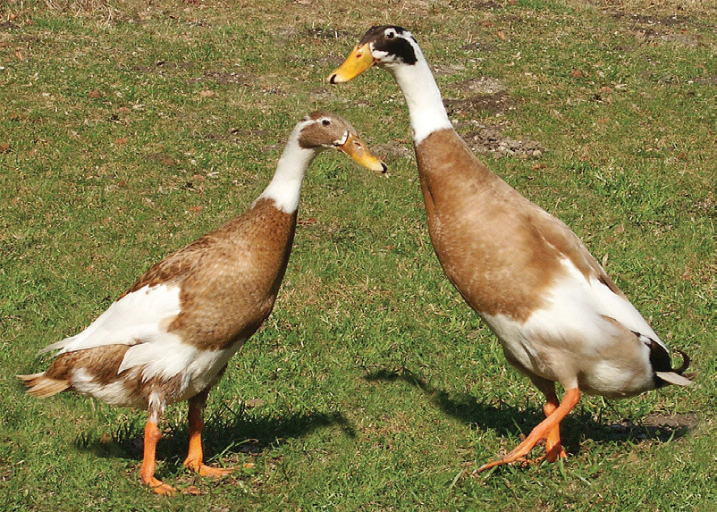
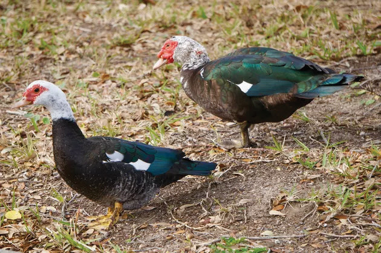

year. Some duck breeds, including local ones, can weigh over 2.95 kg. Under an intensive system, some ducks can lay up to 300 eggs a year. Adult male ducks, or drakes, can weigh about 2 kg. If they are from improved breeds and they are well-cared for, they can grow to weigh 4.5 kg and females or hens can weigh 3.5 kg. In an integrated system, ducks can be raised with fish. This helps to increase fish production, improve fish quality, and reduce feed costs for ducks. It also boosts farmers’ output and income. However, a problem is that ducks can eat small fish, which weigh less than 4 grams. Despite this challenge, the benefits of this system are greater than the problems. Ducks can survive in tough conditions and diseases. They eat less because they can eat forage like ruminants. Ducks live longer and are profitable. They need affordable housing, thus, they can be raised for food or saleable products with low costs.
Duck breeds
Several duck breeds that are suitable for warm climates and thrive in tropical environments are also suitable for Tanzania. The following are some duck breeds that are suitable for tropical conditions including Tanzania:
(a) Indian Runner
These ducks stand up straight and have a unique way of running. They are excellent foragers (eating grasses) and hence can adapt well to free-range conditions. Figure 14.2 (a) shows Indian Runner ducks.

(b) Muscovy
These ducks have a unique appearance with a red face and caruncles (fleshy growths) around the eyes. They are excellent foragers. Figure 14.2 (b) shows Muscovy ducks.
